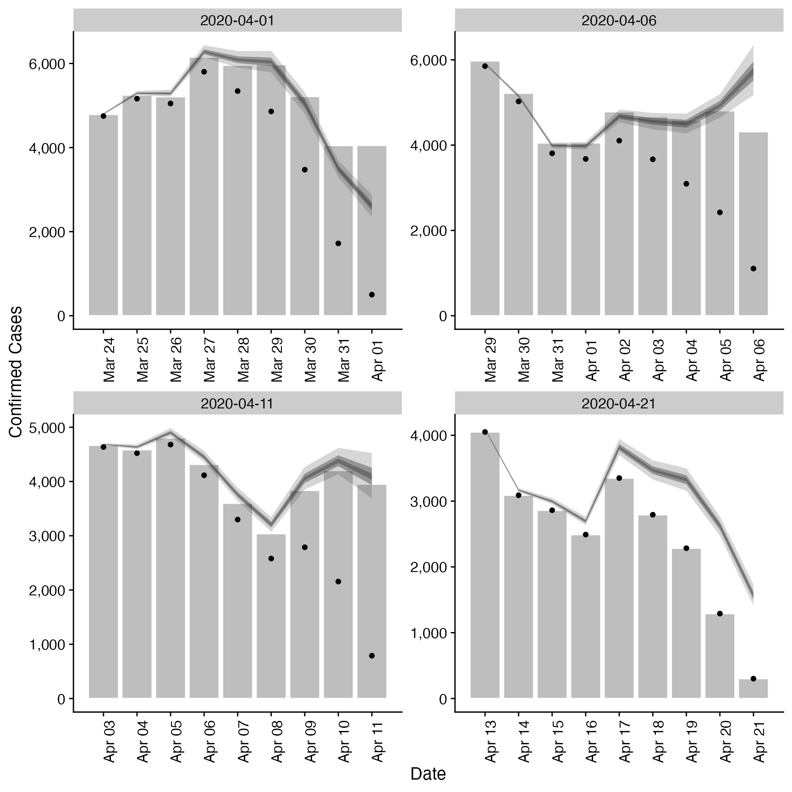

![[Stable]](figures/lifecycle-stable.svg) Estimates a truncation distribution from multiple snapshots of the same
data source over time. This distribution can then be used in
Estimates a truncation distribution from multiple snapshots of the same
data source over time. This distribution can then be used in regional_epinow,
epinow, and estimate_infections to adjust for truncated data. See here
for an example of using this approach on Covid-19 data in England. The
functionality offered by this function is now available in a more principled
manner in the epinowcast R package.
The model of truncation is as follows:
The truncation distribution is assumed to be discretised log normal with a mean and standard deviation that is informed by the data.
The data set with the latest observations is adjusted for truncation using the truncation distribution.
Earlier data sets are recreated by applying the truncation distribution to the adjusted latest observations in the time period of the earlier data set. These data sets are then compared to the earlier observations assuming a negative binomial observation model with an additive noise term to deal with zero observations.
This model is then fit using stan with standard normal, or half normal,
prior for the mean, standard deviation, 1 over the square root of the over dispersion
and additive noise term.
This approach assumes that:
Current truncation is related to past truncation.
Truncation is a multiplicative scaling of underlying reported cases.
Truncation is log normally distributed.
Usage
estimate_truncation(
obs,
max_truncation = 10,
model = NULL,
CrIs = c(0.2, 0.5, 0.9),
verbose = TRUE,
...
)Arguments
- obs
A list of data frames each containing a date variable and a confirm (integer) variable. Each data set should be a snapshot of the reported data over time. All data sets must contain a complete vector of dates.
- max_truncation
Integer, defaults to 10. Maximum number of days to include in the truncation distribution.
- model
A compiled stan model to override the default model. May be useful for package developers or those developing extensions.
- CrIs
Numeric vector of credible intervals to calculate.
- verbose
Logical, should model fitting progress be returned.
- ...
Additional parameters to pass to
rstan::sampling.
Value
A list containing: the summary parameters of the truncation distribution
(dist), the estimated CMF of the truncation distribution (cmf, can be used to adjusted
new data), a data frame containing the observed truncated data, latest observed data
and the adjusted for truncation observations (obs), a data frame containing the last
observed data (last_obs, useful for plotting and validation), the data used for fitting
(data) and the fit object (fit).
Examples
# set number of cores to use
options(mc.cores = ifelse(interactive(), 4, 1))
# get example case counts
reported_cases <- example_confirmed[1:60]
# define example truncation distribution (note not integer adjusted)
trunc_dist <- list(
mean = convert_to_logmean(3, 2),
mean_sd = 0.1,
sd = convert_to_logsd(3, 2),
sd_sd = 0.1,
max = 10
)
# apply truncation to example data
construct_truncation <- function(index, cases, dist) {
set.seed(index)
cmf <- cumsum(
dlnorm(
1:(dist$max + 1),
rnorm(1, dist$mean, dist$mean_sd),
rnorm(1, dist$sd, dist$sd_sd)
)
)
cmf <- cmf / cmf[dist$max + 1]
cmf <- rev(cmf)[-1]
trunc_cases <- data.table::copy(cases)[1:(.N - index)]
trunc_cases[(.N - length(cmf) + 1):.N, confirm := as.integer(confirm * cmf)]
return(trunc_cases)
}
example_data <- purrr::map(c(20, 15, 10, 0),
construct_truncation,
cases = reported_cases,
dist = trunc_dist
)
# fit model to example data
est <- estimate_truncation(example_data,
verbose = interactive(),
chains = 2, iter = 2000
)
# summary of the distribution
est$dist
#> $mean
#> [1] 0.744
#>
#> $mean_sd
#> [1] 0.049
#>
#> $sd
#> [1] 0.838
#>
#> $sd_sd
#> [1] 0.058
#>
#> $max
#> [1] 10
#>
# summary of the estimated truncation cmf (can be applied to new data)
print(est$cmf)
#> index mean se_mean sd lower_90 lower_50 lower_20
#> 1: 10 1.0000000 1.279409e-16 1.283577e-16 1.0000000 1.0000000 1.0000000
#> 2: 9 0.9896742 8.527343e-05 2.586085e-03 0.9852821 0.9879673 0.9891523
#> 3: 8 0.9752075 1.874433e-04 5.682703e-03 0.9656917 0.9714186 0.9739858
#> 4: 7 0.9544670 3.080265e-04 9.333227e-03 0.9390476 0.9482145 0.9523625
#> 5: 6 0.9239393 4.455752e-04 1.349054e-02 0.9016890 0.9149201 0.9206497
#> 6: 5 0.8776438 5.906245e-04 1.786828e-02 0.8481261 0.8657368 0.8730120
#> 7: 4 0.8050713 7.140086e-04 2.160895e-02 0.7702228 0.7902653 0.7990203
#> 8: 3 0.6874329 7.428366e-04 2.265592e-02 0.6523311 0.6719343 0.6806584
#> 9: 2 0.4929367 5.385087e-04 1.764046e-02 0.4654431 0.4807083 0.4875549
#> 10: 1 0.1936607 2.541848e-04 1.210333e-02 0.1755598 0.1852789 0.1900047
#> median upper_20 upper_50 upper_90
#> 1: 1.0000000 1.0000000 1.0000000 1.0000000
#> 2: 0.9898251 0.9904128 0.9914141 0.9936830
#> 3: 0.9754583 0.9767641 0.9790239 0.9841684
#> 4: 0.9548055 0.9569119 0.9607285 0.9695502
#> 5: 0.9241016 0.9272944 0.9329604 0.9461878
#> 6: 0.8774531 0.8818986 0.8893941 0.9076122
#> 7: 0.8046200 0.8099439 0.8190109 0.8423103
#> 8: 0.6867608 0.6920706 0.7016489 0.7270827
#> 9: 0.4920599 0.4963634 0.5044143 0.5236983
#> 10: 0.1930451 0.1958598 0.2012141 0.2142207
# observations linked to truncation adjusted estimates
print(est$obs)
#> date confirm last_confirm report_date mean se_mean sd lower_90
#> 1: 2020-03-24 4751 4789 2020-04-01 4800 0 12 4781
#> 2: 2020-03-25 5163 5249 2020-04-01 5294 1 30 5246
#> 3: 2020-03-26 5049 5210 2020-04-01 5290 1 51 5207
#> 4: 2020-03-27 5804 6153 2020-04-01 6283 3 91 6134
#> 5: 2020-03-28 5345 5959 2020-04-01 6092 4 124 5889
#> 6: 2020-03-29 4860 5974 2020-04-01 6041 5 162 5769
#> 7: 2020-03-30 3474 5217 2020-04-01 5059 5 166 4777
#> 8: 2020-03-31 1721 4050 2020-04-01 3495 3 124 3286
#> 9: 2020-04-01 502 4053 2020-04-01 2602 3 160 2343
#> 10: 2020-03-29 5852 5974 2020-04-06 5913 0 15 5889
#> 11: 2020-03-30 5025 5217 2020-04-06 5152 0 30 5105
#> 12: 2020-03-31 3808 4050 2020-04-06 3990 1 39 3927
#> 13: 2020-04-01 3676 4053 2020-04-06 3979 1 58 3885
#> 14: 2020-04-02 4105 4782 2020-04-06 4679 3 95 4522
#> 15: 2020-04-03 3668 4668 2020-04-06 4559 4 122 4354
#> 16: 2020-04-04 3093 4585 2020-04-06 4504 4 147 4253
#> 17: 2020-04-05 2423 4805 2020-04-06 4921 5 175 4626
#> 18: 2020-04-06 1106 4316 2020-04-06 5733 7 354 5162
#> 19: 2020-04-03 4636 4668 2020-04-11 4684 0 12 4665
#> 20: 2020-04-04 4522 4585 2020-04-11 4637 0 27 4594
#> 21: 2020-04-05 4681 4805 2020-04-11 4904 1 48 4828
#> 22: 2020-04-06 4115 4316 2020-04-11 4454 2 65 4349
#> 23: 2020-04-07 3298 3599 2020-04-11 3759 2 76 3633
#> 24: 2020-04-08 2580 3039 2020-04-11 3206 2 86 3063
#> 25: 2020-04-09 2788 3836 2020-04-11 4060 4 133 3834
#> 26: 2020-04-10 2156 4204 2020-04-11 4379 4 155 4116
#> 27: 2020-04-11 789 3951 2020-04-11 4089 5 252 3683
#> 28: 2020-04-13 4050 4050 2020-04-21 4092 0 10 4075
#> 29: 2020-04-14 3089 3089 2020-04-21 3167 0 18 3138
#> 30: 2020-04-15 2861 2861 2020-04-21 2997 0 29 2950
#> 31: 2020-04-16 2491 2491 2020-04-21 2696 1 39 2632
#> 32: 2020-04-17 3350 3350 2020-04-21 3818 2 77 3691
#> 33: 2020-04-18 2793 2793 2020-04-21 3471 3 93 3315
#> 34: 2020-04-19 2284 2284 2020-04-21 3326 3 109 3141
#> 35: 2020-04-20 1291 1291 2020-04-21 2622 2 93 2465
#> 36: 2020-04-21 302 302 2020-04-21 1565 2 96 1409
#> date confirm last_confirm report_date mean se_mean sd lower_90
#> lower_50 lower_20 median upper_20 upper_50 upper_90
#> 1: 4792 4796 4799 4803 4808 4821
#> 2: 5273 5285 5292 5300 5314 5346
#> 3: 5255 5276 5287 5301 5324 5376
#> 4: 6221 6259 6280 6304 6343 6436
#> 5: 6009 6060 6091 6122 6173 6302
#> 6: 5933 6000 6040 6082 6149 6309
#> 7: 4951 5019 5058 5103 5170 5325
#> 8: 3411 3467 3497 3529 3580 3697
#> 9: 2494 2563 2600 2642 2709 2859
#> 10: 5902 5908 5912 5916 5923 5939
#> 11: 5132 5144 5151 5159 5172 5203
#> 12: 3963 3979 3988 3998 4015 4055
#> 13: 3940 3964 3977 3992 4017 4076
#> 14: 4615 4654 4678 4702 4741 4840
#> 15: 4478 4528 4558 4590 4641 4762
#> 16: 4408 4469 4503 4544 4603 4741
#> 17: 4803 4881 4924 4969 5040 5205
#> 18: 5496 5646 5729 5820 5969 6299
#> 19: 4676 4680 4683 4686 4692 4705
#> 20: 4618 4629 4635 4642 4655 4682
#> 21: 4872 4891 4902 4915 4936 4984
#> 22: 4410 4437 4452 4469 4497 4563
#> 23: 3708 3739 3758 3777 3809 3888
#> 24: 3150 3185 3206 3228 3264 3349
#> 25: 3973 4028 4059 4096 4149 4273
#> 26: 4274 4343 4381 4422 4485 4632
#> 27: 3921 4028 4087 4152 4258 4494
#> 28: 4085 4089 4091 4094 4099 4110
#> 29: 3155 3162 3166 3171 3179 3198
#> 30: 2977 2989 2996 3004 3017 3046
#> 31: 2669 2686 2695 2705 2722 2762
#> 32: 3766 3798 3817 3837 3869 3949
#> 33: 3410 3448 3471 3495 3534 3626
#> 34: 3255 3300 3325 3355 3399 3501
#> 35: 2559 2600 2623 2647 2685 2773
#> 36: 1500 1541 1564 1589 1629 1720
#> lower_50 lower_20 median upper_20 upper_50 upper_90
# validation plot of observations vs estimates
plot(est)
